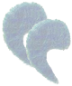
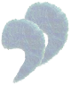

De: La Frikipedia, la enciclopedia extremadamente seria.
De: La Frikipedia, la enciclopedia extremadamente seria. De: La Frikipedia, la enciclopedia extremadamente seria.
| De la serie anime para todos: | |||
| Sayonara Zetsubou Sensei | |||
| |||
| Género: | Suicida | ||
| Episodios: | 38 (12 SZS - 13 ZSZS - 13 Zan SZS) | ||
| Autor del manga: | | ||
| Publicación: | Kōdansha | ||
| Publicado en: | | ||
| Director del anime: | | ||
| Transmitido en: | Pues, la tele | ||
| Ovas: | 3 + 2 | ||
| Películas: | Niguna, así que ruegale a tu desesperado Diox escoja Quentin Tarantino (Ya que solamente el puede dirigir una película basada en algo con tanto nivel de | ||
| Notas | Tiene una Death Note y es inmortal | ||
«¡¡¡¡ZETSUBOU SHITA!!!!»
~ Nozomu Itoshiki Sobre cualquier cosa de la vida
«¿En serio lo quiere saber?»
~ La Señora del Complejo Departamental a Nozomu antes de decirle La respuesta a la Vida, el Universo y Todo
«¡¡¡¡ZETSUBOU SHITA!!!!»
~ Nozomu Itshiki Despues de saber La respuesta a la Vida, el Universo y Todo
«¡¡¡¡ZETSUBOU SHITA!!!!»
~ Nozomu Itshiki Despues de saber que aparecería en la Frikipedia
«¡¡¡¡ZETSUBOU SHITA!!!!»
~ Tú Despues de ver y no entender esta serie
Quisiera poner una sinopsis, pero... Sayonara Zetsubou Sensei mierda, que nombre mas largo en repetir o en resumen SZS, trata de un tipo un profesor, que es el que se levanta todas las minas prota de la serie. Este tipo profesor quiere morir a toda costa, no sólo por haber visto el relleno de Naruto en la tele sino también porque todos los pendejos chicos que hay en su clase jodidos malcriados y bizarros sucede que no son normales, excepto una que siempre es normal. Son subnormales. Lo que hay de sentido en este anime suele tomar entre unos 5 segundos, después el espectador no entiende ni un chaja nada. Suele criticar la realidad para luego hablarnos de lo irreal que puede ser sobrevivir a una muerte en la horca después de media hora y que una tipa se te halla trepado abajo. Es paródica y chistosa; si miento conseguidme una horca como Nozomu para gritar "ZETSUBOU SHITAAAAA" como pendejo buen fan de esta serie. Tiene el síndrome de caricatura gringa, o sea, que te puedes ver el primer episodio, luego el final, luego el veinticatorcemil uno y aun así vas a entender todo (Mas bien nada, porque en este anime aunque te veas los episodios en el orden correcto no entiendes ni un carajo). Lo que mas reconoce a este anime es su increíble calidad de dibujo si, increíble, ¡Pero increíblemente mala! la cual es tan suprema que ningún otro anime ha podido igualarla dudo que alguien quiera.
ADVERTENCIA Este anime es demasiado retorcido, demente, SHAFT, así que, si no estas preparado mentalmente para ver Terroristas, escuelas incendiándose o Harem (Y también Harem Reverso), mejor vete a ver los Teletubbies o algo así.
«¿¡Que harías si me hubiera MATADO!?»
~ Itoshiki Nozomu Quejándose con Kafuka Fuura como agradecimiento por no dejarle morir en paz.
Es un tipo de mezcla entre Maestro Roshi, ya que cada que ve una mujer le sale una cascada de sangre de la nariz, al parecer en el Anime cuando alguien se excita sucede esto en vez de tener una erección (Para mas información ver las "Leyes del Anime"). Y al parecer es alérgico a las raíces de loto.
Toda su familia se le parece no sólo hablando por el aspecto, también por lo pendejo excepto por su hermana (Cuyo fetiche son los kimonos, la katana, posar como modelo mostrando culo y rostro para el creative commons). Casi todas sus alumnas están enamoradas de él, ah, y yo que pensaba que su vida no tenía sentido. Se ha llegado a especular que Nozomu es uno de los cuatro jinetes del Apocalipsis, dado que todas sus jodidas predicciones reflexiones sobre la vida dan justo en el clavo y, casi siempre, es seguro que algo de lo que ha dicho te ha de haber pasado por lo menos una vez en tu Friki Vida. Su nombre se deriva de Zetsubou que significa ¡Joder! La vida es una mierda Desesperado. También llamado "Sensei".
La hermana de Nozomu. Apareció poco después de que el publico se aburriera de que siempre fueran las mismas minas las que hicieran el Fanservice. Esta obsesionada con rebanar a las personas con Katanas (De seguro es por que se volvió adicta al Cine de Quentin Tarantino desde que vio Kill Bill). Aparte tiene un trabajo en un autobús sin chofer (O podría ser el autobús de Rosario to Vampire, quien sabe). Su nombre deriva de Zetsurin que Anda a saber que significa significa Sin igual (¡MENTIRA! ¡Significa excitada!).
Cuando Kumeta se vino a FOX entonces se vio obligado a ver 20 horas seguidas de House M.D., por lo que se le vino a la mente la idea de un doctor Hijoputa con el cual nadie quisiera ir. Aunque algunos dicen que en realidad es Gregorio Casa antes de que le saliera barba y se quedara cojo, habrá que leerse el manga para mas información. El tío este es idéntico a Nozomu solamente que no está tan desesperado como su hermanito porque este no vio el relleno de Naruto... Solamente el de Bleach. Su nombre deriva de Zetsumei que significa Muerte. P.D. ¿Pensaban que el hecho de ser hermano de Nozomu lo salvaría de los Doujinshis Yaoi? Jajajaja, fastidiaros mortales (Eso es un no). Se rumorea en las calles que cuando vas a consultarlo siempre te recomienda lo mismo.
Probablemente el personaje mas odiado de toda la serie, dado que muchos Otakusexuales envidian su relación con Kiri. Es hijo del hermano mayor del prota pero cuando aparece dice ser su hijo tu también te lo creíste lo que hace que sus fans (Chiri y Matoi) intenten matarlo. Tiene una relación shota con la hikikomori la cual no admite menudo idiota. Su nombre deriva de Zekkou que significa Ruptura de relaciones.
El mayor de los hermanos Itoshiki (El otro no cuenta porque no ha salido del closet). Casi nunca sale, es pintor y esta casado con una mancha en la pared llamada Yuka. Su nombre deriva de Zekkei o sea Paisaje incomparable
Este no es de la familia, pero lo pongo aquí porque no se donde. Es la versión Zetsubou De Watari en Death Note, no hace gran cosa. Es mayordomo y como tal se le llama "Sebastian" por toda frikicalentonadelfamosodemoniomojavaginas como a todo mayordomo anime. Su nombre deriva de... ah, no, espera, este no.
«No.. ¡NO LO HAGA! ¡NO MENOSPRECIE SU VIDA!»
~ Kafuka Fuura Diciendole nobles y esperanzadoras palabras a su Sensei, que esta colgado del cuello, mientras lo estira.
«Aquí esta el importe de hoy, Supervisor Rosado»
~ Kafuka pagándole a su Sensei por los servicios nocturnos de party boy.
Una chica que ve todo lo positivo nada de negativo en ello maldita positivista, perdón ¿eso iba en lineas? ademas de tener nombre de escitor emo (Kafka=Kafuka). Suele ser la que le saca de quicio a el "Supervisor Rosado" (Así es como Kafuka nombra al profesor, por razones que desconocemos) ya que con cada plática Emo que éste da ella lo explica de forma para programas de personas retrasadas positiva. No se sabe por que pero muchos fans de la serie escatiman que Kafuka se va a quedar con el Sensei, en fin, eso no es importante. Podrá parecer la mina mas "tranquila" pero en realidad es una Hereje (Ya saben, adorar al Monstruo macarrón volador en vez de nuestro amado Monesvol y cosas así por el estilo). Últimamente a estado apareciendo menos en la serie, tal vez por que los fans del Nozomu×Kiri o el Nozomu×Matoi o el Nozomu×Abiru o el Nozomu×Kudou, bueno, ustedes entienden ¿No? Gracias a esta mina se conoce el planeta Porrorrokian (Algunos científicos creen que en realidad se refiere al planeta Namek).
Posteriormente se revela que estuvo muerta todo el tiempo, su verdadero nombre es An Akagi y cual Angel Beats!, sus organos fueron a parar a casi todas las locas de la serie (+ un cuentacuentos), haciendo que estos se enamoren del sensei y cada vez que ella aprece en la serie es porque alguno de las chicas (+ un cuentacuentos) esta siendo poseído de turno. Al enterarse Nozomu decide casarse con todos los que tienen los organos de Kafuka porque asi indirectamente se estaria casando con ella también. Un rollo complicado, en verdad.
Una chica re-perfeccionista (Tal vez sea la hermana perdida de Death the Kid) Que tienes que hacer esto así, que lo otro así ¡COÑO! ¡Mejor que escriba un libro! Con una raya en medio... del pelo mal pensados. Insoportable, Antifriki. Se dice que si su cabello es tocado, se enriza y parece el mismo diablo, sí, tal vez no haya mucha diferencia. La mina tiene la habilidad de llorar solamente por un ojo (Es una habilidad bastante inútil, pero ha que mola ¿no?). Esta mina esta enamorada del Sensei solamente por que estuvieron en la misma cama (No piensen mal, mejor vean el anime para entenderlo). Probablemente sea Roja Quien sabe. Siempre que aparece se sabe que va a haber Sangre... Mucha Sangre.
Al final del manga se revela que esta enamorada del sensei porque tiene trasplantado el corazón de Kafuka. De modo que pasa a ser parte del harem de Nozomu en una isla satánica donde todos copularon como conejos y tuvieron lolis Kafuka de hijas.
«Meru, meru... Meru, meru... Piroriparopirirora»
~ Meru Otonashi Imitando la señal telefónica cuando se conecta a Internet para spammearte hasta que se te cuelga el CACHONDOmail.
Una Friki que se la pasa en el celu enviando mensajitos para bajar cosas Pr0n para comunicarse, la cosa es que re-bardea a todo el mundo. No hay forma de separársele de su celular, tiene las baterías en sus brasieres (Me pregunto como llegarán a caber en tan chiquito espacio...). Sabe el idioma del "cobertura". Principal victima en la serie de los Dōjinshis Lolicon. Ademas toma Coca-Cola, ah... pero si esta serie esta llena de herejes. No habla porque dice que su voz es extraña y a veces parece que dice "Meru meru", pero es sólo un sonido del móvil. En el manga, Pedobear y otros pederastas la andan secuestrando para hacerle cosas, pero a las demas chicas les llega.
Al final del manga se revela que esta enamorada del sensei porque tiene trasplantadas las cuerdas vocales de Kafuka y por eso es que no hablaba. De modo que pasa a ser parte del harem de Nozomu en una isla satánica.
La que muestra las bragas y con doble personalidad, quiere demandar a medio mundo, se nota que le da duro a los juegos de Phoenix Wright. Lo único que hace, al igual que la profe Arai es darle duro al Fanservice porque para otra cosa no sirve. Siempre se sabe que calzones lleva, suelen ser decoraditos o de fresitas.
Tiene otra personalidad que se porta como la tipica esposa japonesa arrastrada llamada Kaede, que casi nunca sale y esta enamorada de el Sensei.
La chica que nunca sale del Colegio, porque se le da la gana y ya, el mundo es libre se fuma todo debajo de la colcha. Es acosada por la profe Arai, y la muy condenada esta sedentaria siempre que puede le puede tocar las tetas a la profe, aparte de que vive en su oficina. Tiene la piel blanca por lo poco que le da el sol y esta enamorada de Nozomu por que fue el primero que la abrio (Del pelo, malpensados). Favorita de los otakusexuales, es quien se encarga de hacer que a Majiru se... Bueno, Ustedes entienden.
Lo único que se puede decir de esta tipa antifriki, aburrida y fastidiosa chica es que es completamente normal.
«Sensei... Usted luciría bien una cola»
~ Abiru Kuboshi Haciendo una insinuación con doble sentido en la cual obliga a su Sensei a usar cola de gato.
La que tira la cola de los animales, fetichismo algo raro, aunque hay peores sí es así de chica que pasará ¿no?. Esta tipa insiste en jalarle la cola hasta el que no es animal y ponerle cola a Nozomu, he ahí porque tiene heridas hasta las tetas piernas. No se puede decir que ame a Nozomu, mas bien lo quiere para sus fantasías sexuales fetichismos raros. Esta cubierta de vendajes, lo que hace que la gente piense que en su casa la maltratan, pero es porque cada vez que le jala la cola a un animal, estos le sacan la mierda.
Al final del manga se revela que esta enamorada del sensei porque tiene trasplantado el ojo de Kafuka y por eso es que tenia ojos de dos colores diferentes y tenia visiones del pasado, presente y futuro en el que veía como murió Kafuka originalmente (la atropelló el loco del camión). De modo que pasa a ser parte del harem de Nozomu en una isla satánica.
Una chica que parece mala y es mala, pero como las apariencias engañan según el Sensei ella no es culpable pero lo es. el que entendió tiene premio. Si, aunque usted no lo crea, ella también esta enamorada de Nozomu.
Una Friki, Otaku, fan del Yaoi que se quedó con las ganas en Loveless y Gravitation. Incluso hace un dojinshi especial en el que Nozomu es el protagonista. y shippea el Itoshikicest (Nozomu x Mikoto) y el Nozomu x Kudou. Chiri insiste en que ella lo debe de hacer al estilo 4koma (Manga de 4 paneles para el ignorante) dándole finales a sus historias yaoi muy anales dolorosos. Se la pasa todo el día haciendo Doujinshis yaoi (Chicos, aprended de ella, ¡Mandad a la escuela al carajo! y preocuparos por ser Mangakas).
«No soy una acosadora... ¡Solamente es un poco de amor intenso!»
~ Matoi Tsunetsuki Declarándose inocente de colocar micrófonos en la casa de su novio.
Acosadora profesional, en donde quieras que vayas esta, persigue al Sensei (Profe), es como Wally esta en todas partes y aparece de la nada. Antes acosaba a su novio, pero cuando Nozomu le da la idea de hacer un suicidio doble, la mina decide que el sensei es de su agrado y lo empieza a perseguir a todas partes. Lo acosa hasta cuando va a mear la muy viciosa, y hasta le regala el cuerpo para que mínimo lo use para ahorcarse junto con él y supuestamente seguir juntos hasta la eternidad.
Curiosamente tiene un extraño parecido con Soi Fong de Bleach. Es una de las minas mas queridas de la serie, anda a saber porque. Creo que es bastante obvio que esta enamorada del Sensei si no te has dado cuenta deberías poner mas atención, amigo.
Una inmigrante ilegal, que se la pasa bomba en Japón, no le gustan ni los zapatos ni los calzones. Emigró de Argentina en el defoult. Parece que tienen el Sharingan, ya que si le ves a los ojos te darán ganas de protegerla, no de darle calzones o pantaletas, no, de cuidarla. Presume y es pobre y muchas de las veces es inmune a los efectos que causan sus compañeras de clase (Se cree que utiliza LSD o THC). A veces puede dar patadas ya que ansía darlas como Chuck Norris ah, novata. Aparentemente es mas rica que incluso Guillermito Puertas.
Se culpa de todo, de que Hitler fuera alemán, de que Napoleón sea enano, de que Chuck Norris sea dios. ¡Otra mas al grupo de las que aman a Nozomu! Que novedad.
El tipo que cuando es calvo lo ven todos y cuando se tapa la calva no lo ve nadie (Cosa que aprovecha para entrar a donde solo las chicas, no, si en esta serie todos y todas son unos pervertidos). Lo único que hace es quejarse porque ni la "cara malvada" que aparece en la serie lo pela. Gafapasta de primera. Aparte de todo es un Salido.
Un chico que cuenta cuentos tristes y cortavenas que hace que cualquiera se vuelva emo. Además, Jun puede recitar un cuento dramático a partir de cualquier situación, persona, animal o cosa; hasta de un artículo de la Inciclopedia. Este también esta enamorado del Sensei y le gusta andarle haciendo guiños, pero el Sensei no le pela porque no come morcillas.
En los ultimos capítulos del manga se revela que de chamaco tuvo que hacerse una transfusión de sangre y sus viejos, los típicos locos católicos al estilo de la mamá de Carrie, lo botaron de la casa. La sangre en cuestión era la de Kafuka, haciendo que este se enamore del sensei. Al final cuando Nozomu decide casarse con todas las chicas que tenían los órganos de Kafuka, este también se une al harem.
No, no estoy repitiendo. Este pibe es el que le vende el nombre a Maria porque no tenía dinero para pagar las deudas. Lo vende todo, su casa, su ropa su virginidad, el coche su virginidad otra vez. También se cree que este es el que le vende la droga a Maria y a Kiri.
Profesora que se encarga de dar los mejores fanservice de la historia en los cambios de escena. Tiene unas tetas que te cubren toda la pantalla (Hay quienes creen que incluso le gana a Tsunade) y suele no expresar emociones. La mayoría del tiempo se la pasa abusando de Komori dándole motivaciones personales a Nozomu para que no se suicide.
Los NegatiB son los tíos que hacen desesperado a Nozomu dándole unas gafas que están hechas del mismo material que la diadema encogedora de Goku. Cada vez que piensa en algo positivo, las gafas se encogen, lógico ¿No? estos tíos son la versión Zetsubou del Akatsuki. Como apenas han aparecido, solo podemos decir que sus miembros son:
El origen mismo de los NegatiB no esta claro Aunque, después de todo, ¿Que carajo esta claro en esta serie?. Probablemente sean enviados de Dios (Si, ya ven, en vez de hacer un Apocalipsis manda a unos tíos a convencernos de que la vida es una mierda y debemos suicidarnos). O sí no de Satanas, El Monstruo Macarrón Violador o Diox. Elige, según te convenga. Aunque también puede que solo sean pesimistas realistas.
No hace gran cosa y solo aparece en un episodio, entonces... ¿Que hace que la mencionemos en esta magna web? Pues sencillo:
Porque conoce La respuesta a la Vida, el Universo y Todo. Nada mas por eso.
|  |
RUMBA RUMBA RUMBA RUMBA RUMBA |
 |
| Opening de la Segunda Temporada, Kuusou Rumba |
Los demás openings son parecidos, bueno, no. Pero el concepto es mas o menos el mismo.
Los endings, por el contrario, no presentan una letra tan profunda (Excepto el segundo de la segunda temporada Marionette que fue escrito por Sasori).
Teoría Numero 1: Nozomu es uno de los primeros usuarios de la Frikipedia y se volvió demente Emo desesperado por tener que pasar la manita por todos los enlaces para entender el doble sentido, como aquí: Tú.
Teoría Número 2: Nozomu es un Emo (Hasta ahora esta teoría es la que ha tenido mas aceptación).
Teoría Número 3: Nozomu solamente es un hue´on sin na´ mas que hacer, ni ma´ ni me´os.
Teoría Número 4: Nozomu es un emo.
Teoría Número 5: Nozomu fue bendecido por Monesvol con el maravilloso don de la desesperación mejor que de dinero.
Teoría Número 6: Nozomu es un emo.
Teoría Número 7: Nozomu fue castigado por Monesvol con la penosa desgracia de la desesperación.
Teoría Número 8: Nozomu es una copia barata de Franz Kafka ¿No ven que es tan negativo como el?
Teoría Número 9: ¿Ya dije "Nozomu es un emo"?
Luego de varios capitulos de desesperación, mensajes subliminales y relleno, llego el final del manga, dejando impactados a todos: resulta que Kafuka estaba muerta todo el tiempo cual Sexto Sentido y s verdadero nombre es An Akagi. Aparentemente su viejo el suicida que trataba de colgarse para hacerse mas alto la empujó a la pista donde la pobre fue victima del loco del camión y quedo hecha pure en la calle (porque decidio que la forma mas facil de conseguir pasta era matando a su hija y cobrar el seguro), el profe Nozomu lo vio todo y por eso es tan emo. Al mas puro estilo de Angel Beats!, todos los órganos de Kafuka fueron a parar a todas las chicas locas de la clase (por ejemplo Abiru tiene una cornea y por eso tenia ojos de dos colores, y a Kudou le hicieron una transfusion con la sangre de la retrasada positiva...si, ya se que Kudou es hombre, pero tambien es parte del harem de Nozomu), haciendo que todas se enamoren del profesor emo. Al enterarse de la verdad, Nozomu no tiene mejor idea que...aprovechar la situación, mudarse a una isla desierta y tener un harem con todas las chicas de la clase (y Kudou) donde copulan como conejos y tienen un montón de hijas que parecen lolis Kafuka, acabando la serie.
Muchos creen que su primera aparición fue en el primer episodio bloqueando la vista a Prota ya que no hay episodio en el que no salga. MAEDAX es cerca de veinte veces mas poderoso que Monesvol, Jesús, Diox, El Monstruo Macarrón Volador Buda, Homer J. Simpson Barney, Los Teletubbies, el Weegee, Tails Doll y cualquier otro dios que se te ocurra juntos, ya que puede pasarse el OGame con solo un cazador ligero (No es gran cosa que digamos, pero a ver ¡Intentalo Tú!). Además puede jugar Killzone 2 en el Wii y en la Nintendo DS, SSBB en el Xbox 360 y Halo 3 en la Playstation 3 y en la PSP.
¡Nadie se salva del Pantallazo Azul de la Muerte! (Notese que se esta utilizando una Mac).
La serie poseé una gran variedad de mensajes SUBLIMINALES Y SATANICOS ocultos, algunos al mas puro plagio estilo FUTURAMA pero solo que en vez de lenguaje extraterrestre estos estan en japones y cambian por otros mensajes cada tanto que la cámara voltea para enfocar a los demas protagonistas, este fenómeno se lo llama SPAM ROTACIONAL.
En cambio otro mensajes no tan ocultos son los comentarios completamente irracionales de los personajes que no se comparan con el amplio margen de visión del protagonista porque si le desafian el los reta a jugar al ahorcado y ya se imaginaran que gana. Pero esos mensajes que aveces no cuadran enrealidad tienen doble hasta un triple significado lo cual es producto de la mano de Susumiya Haruhi el gordo de la censura (Explicación mas abajo).
«Mire este anime en una habitación brillante con un corazón oscuro»
~ Tributo a Pokemon por haber producido mas de 400 casos de niños/as convulsionados.
«Un espacio espera en ti, en un NEET Marte»
~ Tributo a la clase social mas trabajadora, referencia basada en la serie Welcome to NHK.
«Usa tu taladro (Moe) para atravesar los cielos»
~ Forma indirecta de describir el fetiche japones tomando a Tengen Toppa como chivo expiatorio.
Autor(es):